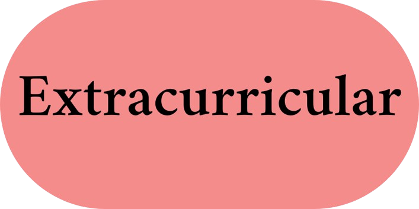
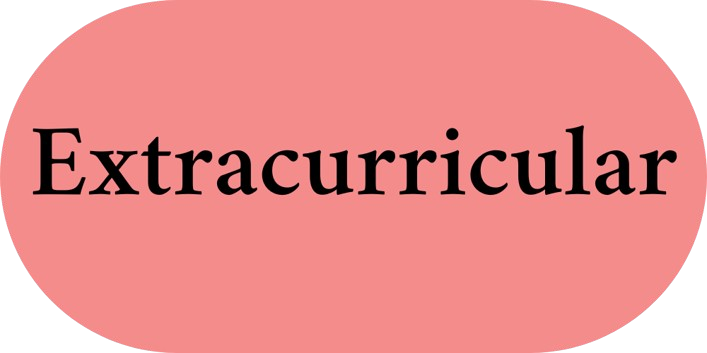

During my internship at Artemis Hospitals, I participated in observership across various departments of Artemis, including: radiotherapy, histopathology, cardiology, cyberknife, and the operating theater. I learn a lot about medicine, the management infrastructure in hospitals, and how engineering can benefit medicine. Cyberknife, for instance, is a form of robotic surgery.
Young Technology Scholars (YTS) is a two-week intensive summer program where students are exposed to real-world engineering and problem-solving. Through hands-on learning and interdisciplinary coursework, students will learn how to leverage technology to solve complex problems.
F1 in Schools is an interdisciplinary competition merging the fields of STEM and business. As an engineer in my team, I designed a model race car on Fusion 360. Our car was one of the fastest out of the 52 teams which was impressive since manufacturing issues made our car 12 grams heavier than its design. I also designed our team logo and instagram page, winning us the Digital Media Trophy!
 
